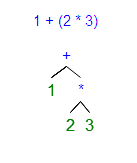

Plínio Balduino
A past century software developer
Clojure
É um LISP
Compila seu código para JVM ou CLR (.NET)
Sintaxe
(defn fatorial [x]
(if (= x 1)
1
(* (x (dec x)))))
(fatorial 6)
Sintaxe
(operador valor valor ... valor)
Sintaxe
(operador
(operador valor
valor
...
valor)
valor)
Precedência de operadores
1 + 2 * 3
Precedência de operadores
1 + 2 * 3
1 + (2 * 3)

Precedência de operadores
(+ 1 (* 2 3))
Macros
Permite que você interfira no compilador em tempo de execução.
Macros
(defn if-not [condition falsy truey]
(if condition
falsy
truey))
(if-not authorized
(show-alert "Acesso negado")
(drop-database))
Macros
(defmacro if-not [condition truey falsy]
`(if ~condition
~falsy
~truey))
(if-not authorized
(show-alert "Acesso negado")
(drop-database))
Funcional
(apply + (range 1 7))
; => 21
(apply * (range 1 7))
; => 720
(apply average (range 1 7))
; => 720
Simplicidade
Java
public static long anFibN(final long n) {
double p = (1 + Math.sqrt(5)) / 2;
double q = 1 / p;
return (long) ((Math.pow(p, n) +
Math.pow(q, n)) /
Math.sqrt(5));
}
Simplicidade
Clojure
(defn fibs []
(map first
(iterate (fn [[a b]]
[b (+ a b)])
[0 1])))
(def fib (lazy-cat [0 1]
(map + fib (rest fib))))
Imutabilidade
Uma função retorna um novo valor
Thread safe
Você não erra o que não se move
Concorrência/Paralelismo
(defn sleep []
(Thread/sleep 1000))
(defn fast-computation [x] (* x 2))
(defn heavy-computation [x]
(sleep)
(* x 2))
(time (doall (map heavy-computation
[1 2 3 4 5])))
; "Elapsed time: 5002.32348 msecs"
(time (doall (pmap heavy-computation [1 2 3 4 5])))
; "Elapsed time: 1003.531455 msecs"